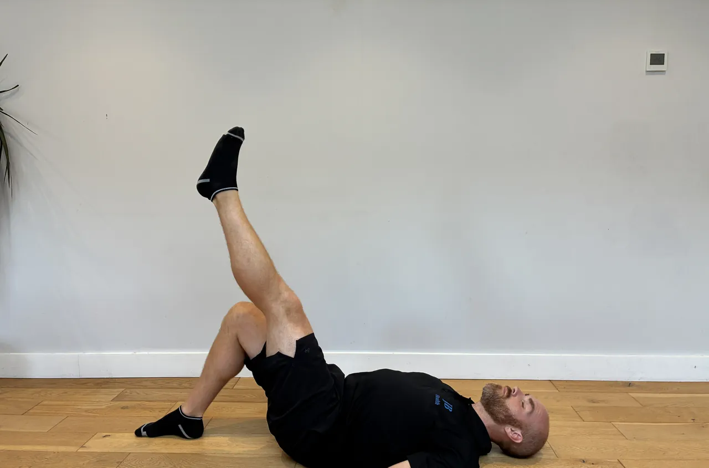
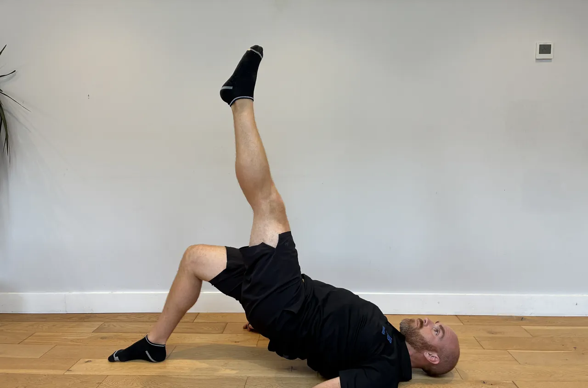
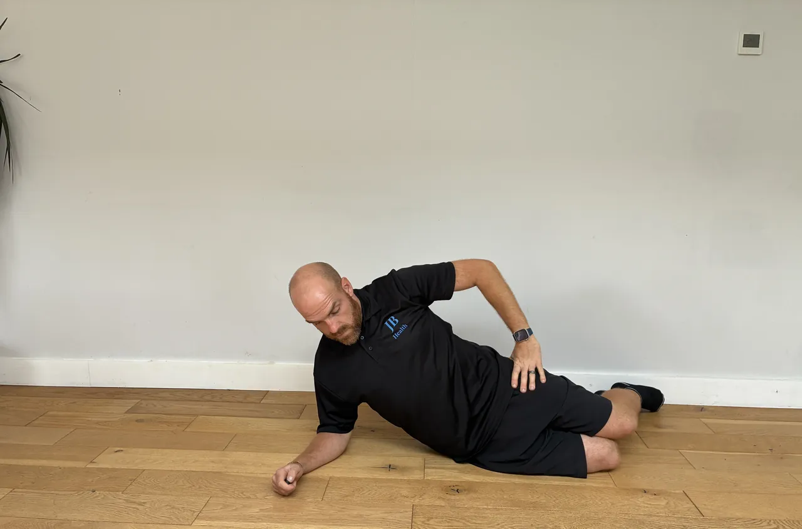
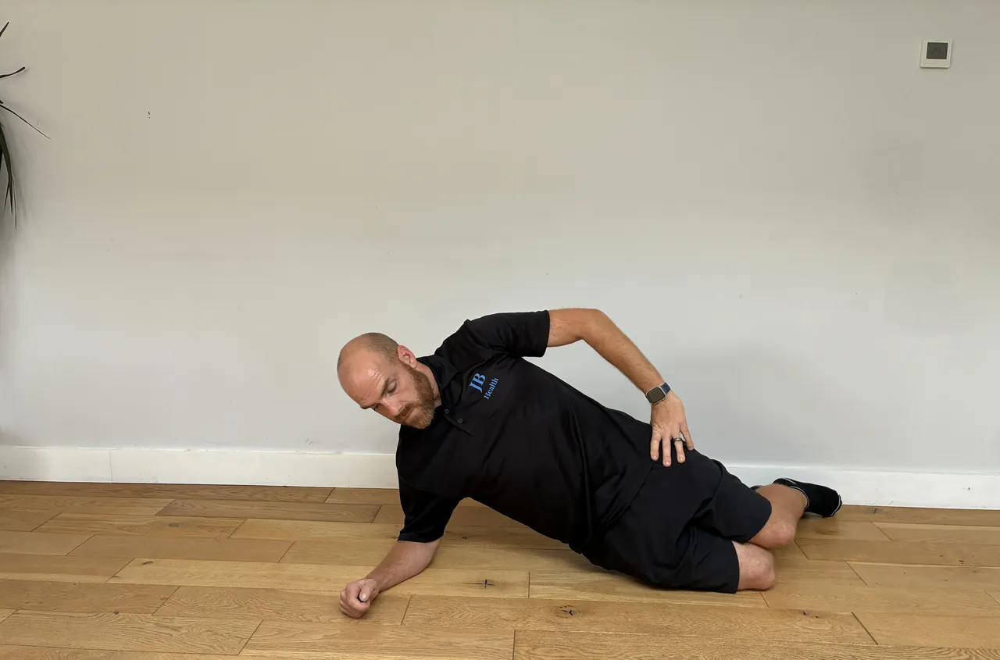
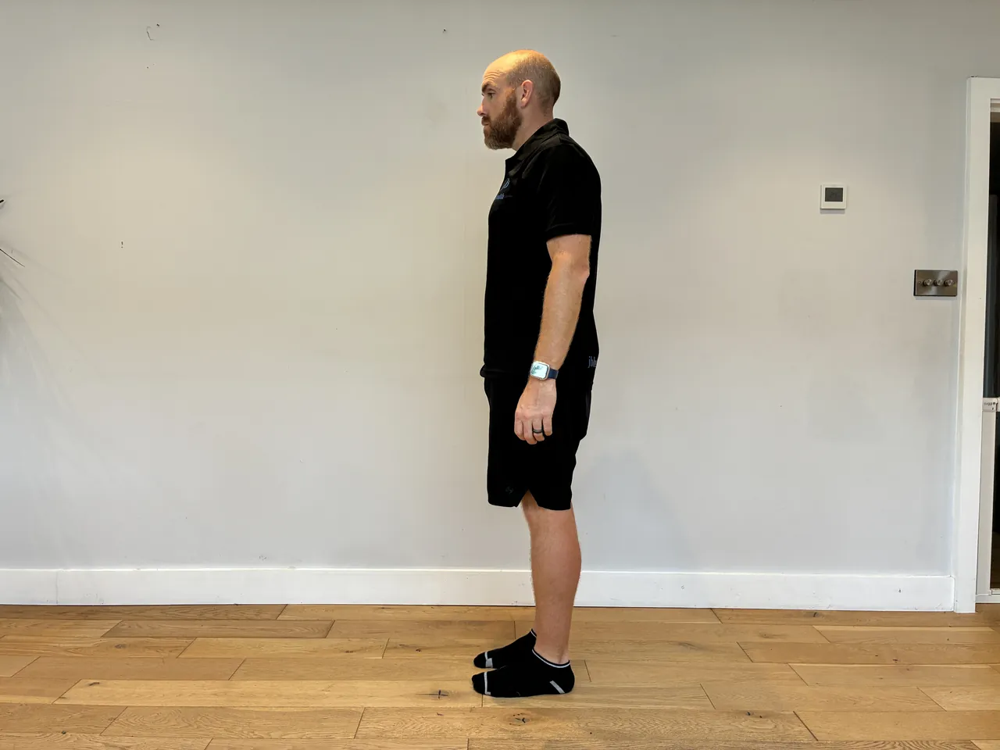
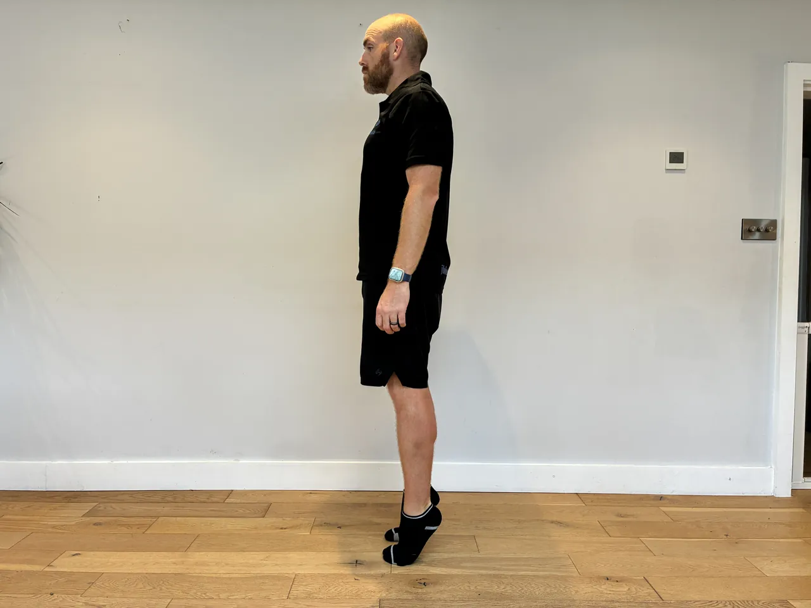
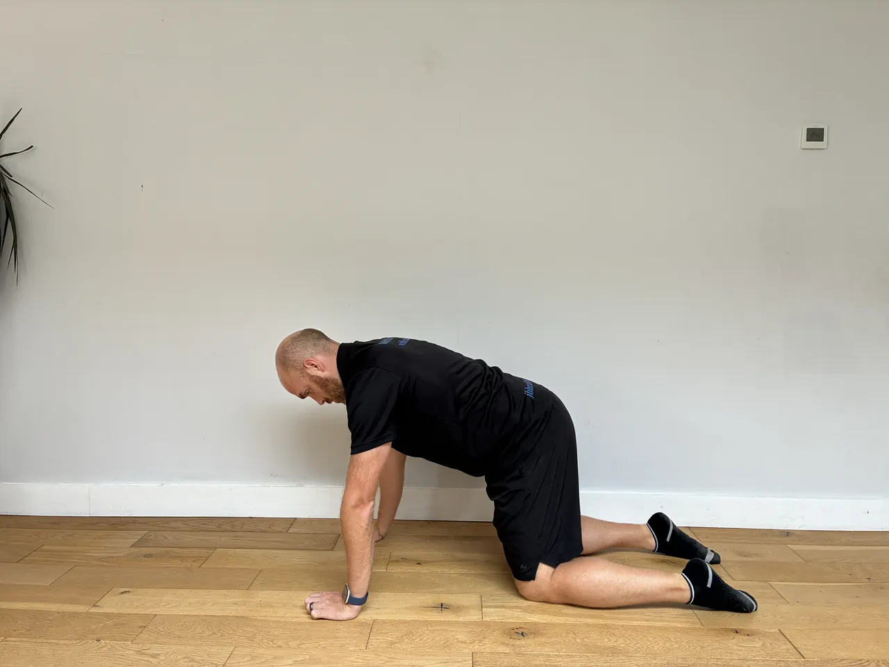
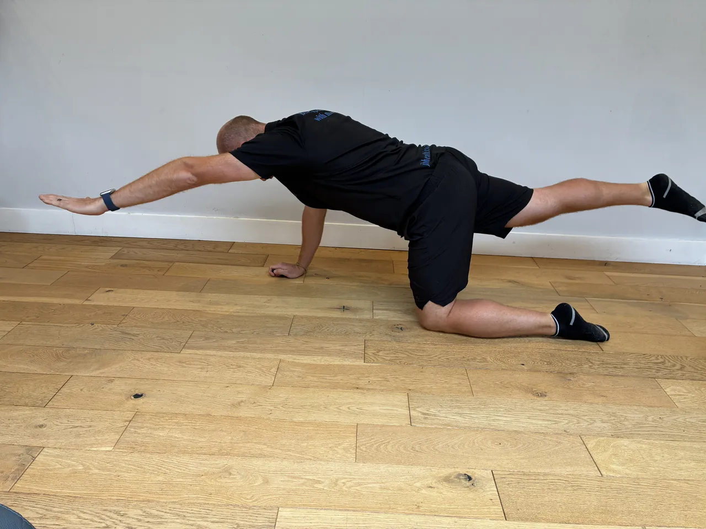

Start: Hold a weight at the chest with both hands, elbows tucked, feet shoulder-width, toes slightly out.
Movement: Sit down into a squat, pause for two to three seconds at the bottom holding still, then drive up through the heels to stand.
Focus: Keep the knees tracking over the toes and the heels down through the pause. Keep the chest up and the weight close, and pause only at a depth you control comfortably.
Start: Hand and knee on a bench, the other foot planted, a dumbbell in the free hand hanging down, back flat and level.
Movement: Pull the dumbbell towards the hip, driving the elbow back and up, then lower slowly under control.
Focus: Lead with the elbow and squeeze the shoulder blade, keeping the back flat and level, not twisting to lift. Keep the shoulder down, and control the lower.
Start: Sit tall on a bench with back support, a dumbbell in each hand at shoulder height, elbows under the wrists, ribs down.
Movement: Press the dumbbells overhead until the arms are straight, then lower them back to shoulder height under control.
Focus: Keep the ribs down and the back against the support, not arching to press. Keep the shoulders down away from the ears, and lower under control to a comfortable shoulder range.


Start: Lie on your back, one knee bent with the foot flat, the other leg extended straight out and held off the floor.
Movement: Drive through the heel of the bent leg to push your hips up until the body is level. Hold two seconds, then lower slowly under control.
Focus: Keep the hips level, don't let the free side drop or twist. Push with the glute, not the lower back, and keep the ribs down.
Start: Stand tall holding a heavy weight in each hand at the sides, feet hip-width, ribs down, shoulders back.
Movement: Walk forward with controlled steps for the set distance, keeping the torso tall and steady.
Focus: Stand tall with the ribs down and shoulders back, not letting the weights pull you into a slump. Take steady steps, brace the core, and keep the weights from swinging.


Start: Lie on your side, forearm on the floor with the elbow under the shoulder, knees bent and stacked, hips off the floor.
Movement: Lift the hips so the body makes a straight line from head to knees and hold for the set time.
Focus: Keep the hips lifted and the body in a straight line, not letting the hips sag towards the floor. Keep the shoulder stacked over the elbow, and come down when the hips start to drop.
Start: Stand tall, feet hip-width, a dumbbell in each hand resting in front of your thighs, knees softly bent, core braced.
Movement: Push the hips back and lower the dumbbells down the front of your legs, keeping them close, until you feel the hamstrings stretch. Drive the hips forward to return.
Focus: Keep the back flat and the dumbbells close throughout. Hinge at the hips, don't squat or round the back. Go only as low as your flat back allows.
Start: Stand tall, feet hip-width, hands on hips or out for balance, space ahead to walk into.
Movement: Step forward into a lunge, lowering until both knees are bent towards right angles, then drive through the front heel to bring the back foot through into the next lunge.
Focus: Keep the front knee over the ankle, not drifting past the toes or caving in, and the torso tall. Step into a controlled lunge each time rather than falling forward, driving through the front heel.
Start: Lie on a flat bench, a dumbbell in each hand pressed above the chest, elbows softly bent, shoulder blades set.
Movement: Open the arms out to the sides in an arc to a comfortable stretch, then bring them back together above the chest.
Focus: Keep a soft elbow bend held throughout, and go only to a comfortable chest stretch, not forcing the shoulders back. Keep the shoulder blades set, and control the arc.
Start: Stand tall holding a med ball in both hands in front of the chest, feet hip-width, core braced.
Movement: Take the ball around the head in a controlled circle, one direction then the other, keeping the trunk still.
Focus: Circle the ball around the head keeping the ribs down and the hips still, so the shoulders and upper back do the work. Keep the circle slow and smooth, and the neck relaxed throughout.


Start: Stand tall, balls of the feet on the floor or a step edge, holding a support for balance.
Movement: Rise up onto the toes, then lower the heels slowly over three to four seconds under control.
Focus: Rise smoothly and control the slow lower, feeling the calf lengthen, not dropping. Keep the ankles tracking straight, and stay in a comfortable range.


Start: On all fours, hands under shoulders, knees under hips, back flat and neutral, core braced.
Movement: Reach the opposite arm and leg out straight until level with the body, hold briefly, then return under control and swap.
Focus: Keep the hips and shoulders square to the floor and the back flat, resisting any twist or sag as the limbs extend. Move slowly, and reach only as far as you keep the neutral spine.
Start: Hold a dumbbell or kettlebell close to your chest with both hands, elbows tucked down, feet shoulder-width, toes slightly out.
Movement: Sit the hips back and down into a squat, keeping the weight at the chest and the torso upright, then drive up through the heels to stand tall.
Focus: Keep the knees tracking over the toes, never caving in, and the heels flat. Keep the chest up and the weight close, and squat only as deep as you can control comfortably.
Start: Stand tall, feet hip-width, holding the weight in front of your thighs with a soft bend in the knees. Set the shoulders back and brace the core.
Movement: Push the hips back and slide the weight down the front of your legs, keeping it close, until you feel a stretch in the hamstrings. Drive the hips forward to stand tall.
Focus: Keep the back flat throughout, never let it round. The movement is a hip hinge, not a squat, and the weight stays close to your legs. Only go as low as you can keep the back flat.
Start: Stand tall holding a med ball, one leg ready to drive the knee up, torso tall, core braced.
Movement: Drive the knee up powerfully towards the chest while bringing the ball down to meet it, then return under control.
Focus: Stay tall and drive from the hip, keeping the standing knee soft and the hips level. Control the return, and keep the movement powerful but balanced.
Start: Stand tall with a weight in one hand at the side like a suitcase, feet hip-width, ribs down, core braced.
Movement: Walk forward with controlled steps for the set distance, keeping the torso upright and level.
Focus: Resist the pull towards the weighted side, keeping the shoulders and hips level and the ribs down. Take steady steps, brace hard, and don't let the weight swing.
Start: Lie on your back on the mat, knees bent, feet flat, one dumbbell in one hand at chest height, the upper arm resting lightly on the floor with the elbow at about 45 degrees.
Movement: Press the dumbbell up until the arm is nearly straight, then lower under control until the upper arm rests back on the floor.
Focus: Let the elbow touch the floor gently each rep rather than crashing down, and keep the shoulder blade set. Because it is one side at a time, brace the trunk so it does not twist toward the working arm.
Start: Lie on your back, knees bent over the hips, arms towards the ceiling, lower back pressed gently into the floor.
Movement: Lower the opposite arm and leg slowly towards the floor, keeping the back flat, then return and swap sides.
Focus: Keep the lower back pressed to the floor as the limbs extend, never letting it arch. Move slowly and controlled, and shorten the reach if the back lifts.
Start: Stand tall, feet hip-width, arms ready to help drive.
Movement: Step one foot back into a reverse lunge, then drive back up and bring that knee up in front to hip height, balancing briefly, before stepping back again.
Focus: Keep the front knee over the ankle in the lunge and the hips level on the knee raise. Control the balance at the top, and drive through the standing heel rather than swinging up.
Start: Stand tall, a weight at one shoulder, feet hip-width, ribs down, core braced against the offset load.
Movement: Press the weight overhead until the arm is straight, then lower back to the shoulder under control.
Focus: Keep the ribs down and resist leaning away from the weight, keeping the torso upright. Keep the shoulder down away from the ear, and press within a comfortable range.
Start: Stand tall holding a med ball or dumbbell in both hands, feet hip-width, knees soft, core braced.
Movement: Sweep the weight down and across from above one shoulder to the opposite hip (or the reverse), rotating through the trunk, then return.
Focus: Turn through the trunk with the hips pivoting and knees soft, not twisting the lower back. Keep the ribs down, control the sweep, and don't fling the weight.
Start: Stand on one foot, the ball of the foot on the floor or a step edge, holding a support for balance.
Movement: Rise up onto the toes as high as you comfortably can, then lower the heel slowly under control.
Focus: Rise and lower slowly and evenly, not bouncing, through the full comfortable range. Keep the ankle tracking straight, not rolling out, and control the lower.
Start: Stand in a split stance, one foot forward and one back, hips square, torso tall.
Movement: Gently tuck the hips under and shift forward until you feel a stretch at the front of the back-leg's hip, then hold.
Focus: Tuck the hips and shift forward only to a comfortable stretch, keeping the torso tall and not arching the back. Squeeze the back glute, breathe, and don't force the range.
Start: Half kneel, one hand behind the head, the elbow out, torso tall.
Movement: Rotate the upper back to bring the elbow round and up, then return, keeping the movement in the mid-back.
Focus: Keep the hips square and let the rotation come from the upper back, not the lower spine. Move slowly to a comfortable range, and breathe through the turn.
Start: Stand tall, feet hip-width, hands relaxed or lightly clasped at the chest for balance.
Movement: Squat in a set sequence, changing stance or direction each rep (feet forward, wider, angled), sitting the hips back and down, then standing tall between each.
Focus: Keep the knees tracking over the toes in every stance, never letting them cave inward. Sit the hips back, keep the chest up, and only go as deep as you can control without knee discomfort.
Start: Stand on one leg, torso tall, the other leg ready to travel back, standing knee soft, arms ready.
Movement: Hinge forward from the hip, letting the free leg travel back and the arms lower, then return to standing.
Focus: Hinge from the hip with a flat back, keeping the hips level and not opening out. Keep the standing knee soft, move slowly, and control the return.
Start: Set up with hands under the shoulders, body in a straight line from head to heels, core and glutes braced.
Movement: Bend the elbows to lower the chest towards the floor, then press back up to straight arms, keeping the line.
Focus: Keep the body straight, not letting the hips sag or pike. Keep the elbows tucked to about 45 degrees, not flared wide, and lower to a comfortable chest depth.
Start: Sit on the floor with one leg bent in front at 90 degrees and the other out to the side at 90 degrees, sitting tall.
Movement: Flow the knees from side to side, rotating through both hips, pausing where you feel a gentle stretch, then continuing.
Focus: Move from the hips with the torso tall, easing into each side rather than forcing. Use the hands for support, and stay within a comfortable, pain-free range.
Start: Lie on your back, knees bent up, hands lightly behind the head, elbows wide, ribs down.
Movement: Bring one elbow towards the opposite knee as that knee draws in and the other leg extends, then alternate in a pedalling rhythm.
Focus: Rotate through the trunk and keep the elbows wide, not pulling on the neck. Keep the lower back settled and move at a controlled pace, not rushing.
Start: Stand on one leg, torso tall, other foot lifted, arms ready to reach.
Movement: Reach the arms (and torso if set) out to the sides or forward, challenging balance, then return to centre.
Focus: Keep the hips level and the standing knee soft as you reach, moving slowly. Fix the eyes on a point, keep the core engaged, and return under control.
Start: Stand with your back flat against a wall, feet a stride out in front and hip-width apart.
Movement: Slide down the wall until your knees are bent towards a right angle, thighs working, and hold the position for the set time.
Focus: Keep the knees stacked over the ankles, not drifting past the toes, and the whole back in contact with the wall. Drop only as low as your knees stay comfortable, and breathe steadily through the hold.
Start: Lie on your back, one knee bent with the foot flat, the other leg extended straight out and held off the floor.
Movement: Drive through the heel of the bent leg to push your hips up until the body is level. Hold two seconds, then lower slowly under control.
Focus: Keep the hips level, don't let the free side drop or twist. Push with the glute, not the lower back, and keep the ribs down.
Start: Sit or lie with one leg lifted, the foot free to move, ankle relaxed.
Movement: Slowly trace each letter of the alphabet in the air with the big toe, moving only at the ankle through its full comfortable range.
Focus: Move only at the ankle, keeping the leg still, and work through a comfortable range without forcing. Move slowly and smoothly, and stop short of any sharp pain.
Start: Stand tall, feet hip-width, a weight held at the chest or hands free for balance.
Movement: Lunge in a set sequence, changing direction each rep (forward, reverse, lateral, angled), lowering under control and pushing back to standing between each.
Focus: Keep the front knee tracking over the foot, never caving in, and the torso tall. Push back to standing through the front heel, and control each direction rather than rushing the sequence.
Start: Set up in a push-up position, hands under the shoulders, body in a straight line, core braced.
Movement: Perform a push-up, and at the top push a little further to spread the shoulder blades (the plus), then relax and repeat.
Focus: Keep the body in a straight line, not sagging or piking. Keep the elbows tucked to about 45 degrees, and on the plus spread the shoulder blades rather than shrugging.
Start: Lie on your back, one knee bent, one leg straight, hands under the lower back, elbows down.
Movement: Slowly lift the head and shoulders just slightly, hold, then lower slowly under control.
Focus: Keep the lower back in its natural arch and brace, lifting only slightly and slowly. Keep the neck neutral, don't pull the chin in, and control every phase.
Start: Stand tall, feet hip-width, a dumbbell in each hand resting in front of your thighs, knees softly bent, core braced.
Movement: Push the hips back and lower the dumbbells down the front of your legs, keeping them close, until you feel the hamstrings stretch. Drive the hips forward to return.
Focus: Keep the back flat and the dumbbells close throughout. Hinge at the hips, don't squat or round the back. Go only as low as your flat back allows.
Start: Hand and knee on a bench, the other foot planted, a dumbbell in the free hand hanging down, back flat and level.
Movement: Pull the dumbbell towards the hip, driving the elbow back and up, then lower slowly under control.
Focus: Lead with the elbow and squeeze the shoulder blade, keeping the back flat and level, not twisting to lift. Keep the shoulder down, and control the lower.
Start: Sit tall on a bench with back support, a dumbbell in each hand at shoulder height, elbows under the wrists, ribs down.
Movement: Press the dumbbells overhead until the arms are straight, then lower them back to shoulder height under control.
Focus: Keep the ribs down and the back against the support, not arching to press. Keep the shoulders down away from the ears, and lower under control to a comfortable shoulder range.
Start: Stand with a wide stance, toes slightly out, hands at the chest for balance.
Movement: Shift your weight to one side and sit down into that hip, bending that knee while the other leg stays straight, then push back to centre and repeat the other side.
Focus: Keep the bent knee tracking over the foot, not caving in, and the chest up as you sink into the hip. Keep the straight leg's heel down, and go only as deep as your hips and knees comfortably allow.
Start: Half kneel, one knee down and one foot forward, hips square, torso tall.
Movement: Gently push the hips forward until you feel a stretch at the front of the down-leg's hip, then hold.
Focus: Push the hips forward only to a comfortable stretch, keeping the torso tall and not arching the lower back. Squeeze the glute of the down leg, breathe, and don't force the range.
Start: On all fours, back flat and neutral, core braced, ready to extend the opposite arm and leg.
Movement: Reach the opposite arm and leg out level with the body, then pulse them through a small range while holding the position, before swapping.
Focus: Keep the hips and shoulders square and the back flat through every pulse, resisting the twist. Keep the pulses small and controlled, and stop if the back starts to sag or rotate.
Start: Hold a weight at the chest, elbows tucked, feet shoulder-width, toes slightly out.
Movement: Squat to a comfortable depth and pulse up and down through a small range at the bottom for the set count, then stand tall.
Focus: Keep the knees tracking over the toes and the heels down through every pulse. Keep the chest up and the weight close, and pulse only within a depth the knees tolerate.
Start: Stand or sit tall, a dumbbell at one shoulder, ribs down, core braced against the offset load.
Movement: Press the dumbbell overhead until the arm is straight, then lower back to the shoulder under control.
Focus: Keep the ribs down and resist leaning away from the weight, staying upright. Keep the shoulder down away from the ear, and press within a comfortable range.
Start: Hold a weight or med ball at the chest, feet hip-width, torso tall.
Movement: Step forward into a lunge and, at the bottom, rotate the torso towards the front leg, then return the twist and push back to standing.
Focus: Keep the front knee over the ankle and stable while you rotate, and let the twist come from the upper back, not the knee or lower spine. Keep the chest up and control the rotation.
Start: Stand tall holding a weight overhead in each hand, arms straight, ribs down, core braced.
Movement: Walk forward with controlled steps for the set distance, keeping the weights stable overhead.
Focus: Keep the ribs down and don't arch the lower back to hold the weights up, staying tall. Keep the shoulders stable and the arms straight, and take steady steps.
Start: Set up in a push-up position with the chosen hand position (wide, close or staggered), body in a straight line, core braced.
Movement: Lower the chest towards the floor, then press back up to straight arms, keeping the body in a line.
Focus: Keep the body straight throughout and the elbows tracking in a comfortable line for the grip, not forced wide. Keep the shoulders down and lower to a comfortable depth.
Start: Set up on your side, forearm down with the elbow under the shoulder, legs straight, feet stacked, hips lifted.
Movement: Hold the straight-line side plank completely still for the set time, breathing steadily.
Focus: Keep the hips lifted and the body in one line throughout, never sagging. Keep the shoulder stacked over the elbow, and drop the knee to shorten the lever if the hips fall.
Start: Hold a dumbbell in each hand by your sides or racked at the shoulders, feet shoulder-width, toes slightly out, core braced.
Movement: Sit the hips back and down into a squat, keeping the chest up, then drive through the heels to stand tall.
Focus: Keep the knees tracking over the toes and the heels down throughout. Keep the chest up and the core braced, and go only as deep as your knees and hips stay comfortable.
Start: Lie on your back, one knee bent with the foot flat, the other leg extended straight out and held off the floor.
Movement: Drive through the heel of the bent leg to push your hips up until the body is level. Hold two seconds, then lower slowly under control.
Focus: Keep the hips level, don't let the free side drop or twist. Push with the glute, not the lower back, and keep the ribs down.
Start: Stand tall holding a med ball in both hands in front of the chest, feet hip-width, core braced.
Movement: Take the ball around the head in a controlled circle, one direction then the other, keeping the trunk still.
Focus: Circle the ball around the head keeping the ribs down and the hips still, so the shoulders and upper back do the work. Keep the circle slow and smooth, and the neck relaxed throughout.
Start: Half kneel, one knee down and one foot forward, a weight at the shoulder, hips tall, ribs down, core braced.
Movement: Press the weight overhead until the arm is straight, then lower back to the shoulder under control.
Focus: Keep the ribs down and the hips tall so the lower back doesn't arch. Keep the shoulder down away from the ear, and keep the torso square and steady in the half-kneel.
Start: Hand and knee on a bench, the other foot planted, a dumbbell in the free hand hanging down, back flat and level.
Movement: Pull the dumbbell towards the hip, driving the elbow back and up, then lower slowly under control.
Focus: Lead with the elbow and squeeze the shoulder blade, keeping the back flat and level, not twisting to lift. Keep the shoulder down, and control the lower.
Start: On all fours, a light weight in one hand or a cuff on the wrist, back flat and neutral, core braced.
Movement: Reach the weighted arm and the opposite leg out level with the body, hold briefly, then return and repeat, swapping as set.
Focus: Keep the hips and shoulders square and the back flat, resisting the twist the added weight encourages. Move slowly, and keep the reach to where the neutral spine holds.
Start: Sit into a deep squat, feet shoulder-width, heels down, hands together in front of the chest.
Movement: From the bottom of the squat, reach one arm up towards the ceiling, rotating the upper back to follow the hand, then return and repeat the other side.
Focus: Let the rotation come from the upper back, not the lower spine, and keep the hips settled and heels down. Hold support with the free hand if balance is a challenge.
Start: Hold a bridge at the top with the hips fully extended and level, feet hip-width, core braced.
Movement: Without letting the hips drop, lift one foot a few centimetres off the floor, set it down, then the other, in a slow march.
Focus: Keep the hips absolutely still and level, no rocking or dipping as the foot lifts. The glutes and core hold the position throughout.
Start: Hold a med ball, feet hip-width, torso tall.
Movement: Step forward into a lunge and pass the ball around the front thigh or under the front leg, then return it and push back to standing.
Focus: Keep the front knee over the ankle and stable while you pass the ball, and the chest up. Don't let the knee cave or the torso collapse as you reach, and control the lunge depth.
Start: Sit tall, dumbbells held in front at shoulder height, palms facing you, elbows down, ribs down.
Movement: Press overhead while rotating the palms to face forward, straightening the arms, then reverse the rotation as you lower back down.
Focus: Keep the ribs down and the lower back neutral through the press and rotation. Keep the shoulders down, control the twist, and stay within a comfortable shoulder range.
Start: Stand on one leg without support, torso tall, other foot lifted, arms ready to help balance.
Movement: Hold the single-leg balance freely for the set time, then swap.
Focus: Keep the hips level and the standing knee soft, fixing the eyes on a point ahead. Make small ankle adjustments to stay steady, and keep the core engaged.
Start: Stand a little wider than hip-width holding a med ball in both hands at chest height, knees soft, core braced.
Movement: Squat and sweep the ball low toward one foot, then rise and sweep it up and over to the opposite side in one flowing arc. Alternate sides.
Focus: As you squat, sweep the ball down and across toward one foot, then sweep it up and overhead as you stand and shift toward the other side. Keep the movement continuous and the spine long, matching depth and reach to comfort.
Start: Hold a weight at the chest, feet shoulder-width, toes slightly out.
Movement: Sit down into a squat and, at the bottom, reach the weight forward to help you sit upright, then draw it back to the chest and stand tall.
Focus: Keep the knees tracking over the toes and the heels down. Use the reach to stay upright rather than tipping forward, and squat only as deep as the knees allow.
Start: Stand tall, feet hip-width, holding the weight in front of your thighs with a soft bend in the knees. Set the shoulders back and brace the core.
Movement: Push the hips back and slide the weight down the front of your legs, keeping it close, until you feel a stretch in the hamstrings. Drive the hips forward to stand tall.
Focus: Keep the back flat throughout, never let it round. The movement is a hip hinge, not a squat, and the weight stays close to your legs. Only go as low as you can keep the back flat.
Start: Stand tall, feet hip-width, arms ready to help drive.
Movement: Step one foot back into a reverse lunge, then drive back up and bring that knee up in front to hip height, balancing briefly, before stepping back again.
Focus: Keep the front knee over the ankle in the lunge and the hips level on the knee raise. Control the balance at the top, and drive through the standing heel rather than swinging up.
Start: Hinge forward with a flat back, a light dumbbell in each hand hanging below the chest, elbows softly bent.
Movement: Raise the arms out to the sides to shoulder height, squeezing the shoulder blades, then lower under control.
Focus: Keep a soft bend in the elbows and lead with the backs of the hands, squeezing the shoulder blades. Keep the ribs down and don't swing or shrug, and use a light weight for control.
Start: Stand with the back against a wall or sit tall, heels down, toes free to lift.
Movement: Raise the toes and fronts of the feet up towards the shins, then lower under control.
Focus: Move only at the ankles, raising the toes as high as you can, and control the lower. Keep it slow and deliberate, feeling the front of the shin work.
Start: Lie on your back, knees bent over the hips, arms towards the ceiling, lower back pressed gently into the floor.
Movement: Lower the opposite arm and leg slowly towards the floor, keeping the back flat, then return and swap sides.
Focus: Keep the lower back pressed to the floor as the limbs extend, never letting it arch. Move slowly and controlled, and shorten the reach if the back lifts.
Start: Half kneel or stand with one foot forward, flat on the floor, toes pointing straight ahead.
Movement: Gently drive the knee forward over the toes, keeping the heel down, to a comfortable stretch at the front of the ankle, then return.
Focus: Keep the heel firmly down and let the knee travel over the toes only to a comfortable range. Move slowly, keep the foot pointing straight, and don't force the stretch.
Start: Stand on one leg, torso tall, the other leg ready to travel back, standing knee soft, arms ready.
Movement: Hinge forward from the hip, letting the free leg travel back and the arms lower, then return to standing.
Focus: Hinge from the hip with a flat back, keeping the hips level and not opening out. Keep the standing knee soft, move slowly, and control the return.
Start: Stand with your back, head and arms against a wall, feet a few centimetres out so the lower back stays flat, elbows bent to 90 degrees in a goalpost.
Movement: Slide the arms slowly up towards overhead keeping every point of contact, then slide back down under control.
Focus: Keep the whole back and both arms on the wall throughout. The moment the lower back arches or the hands lift away is your limit, so work just short of it, and breathe steadily.
Start: Stand tall with a weight in one hand at the side like a suitcase, feet hip-width, ribs down, core braced.
Movement: Walk forward with controlled steps for the set distance, keeping the torso upright and level.
Focus: Resist the pull towards the weighted side, keeping the shoulders and hips level and the ribs down. Take steady steps, brace hard, and don't let the weight swing.
Start: Sit on the floor with one leg bent in front at 90 degrees and the other bent out to the side at 90 degrees, sitting tall.
Movement: Rotate both knees across to the other side, switching the front and back legs, keeping the movement smooth, then return.
Focus: Keep the torso tall and move from the hips, easing into the range rather than forcing it. Use your hands for support, and work within a comfortable, pain-free range.
Start: Hold a side plank, top arm reaching towards the ceiling, body in a straight line.
Movement: Reach the top arm under and through the gap beneath your body, rotating the upper back, then return to the open position.
Focus: Keep the hips lifted and level as you rotate, letting the twist come from the upper back, not the lower spine. Keep the shoulder stacked and don't let the hips sag through the reach.
Start: Hold a weight at the chest with both hands, elbows tucked, feet shoulder-width, toes slightly out.
Movement: Sit down into a squat, pause for two to three seconds at the bottom holding still, then drive up through the heels to stand.
Focus: Keep the knees tracking over the toes and the heels down through the pause. Keep the chest up and the weight close, and pause only at a depth you control comfortably.
Start: Sit with your upper back against a bench, a dumbbell held on its end across the front of your hips. Feet flat and hip-width, chin tucked, core braced.
Movement: Drive through the heels and push the hips up to a straight line from knees to shoulders, squeeze the glutes at the top, hold briefly, then lower with control.
Focus: Finish with the glutes at a straight line, don't over-arch the lower back. Keep the ribs down and the chin tucked so the work stays in the hips, and hold the dumbbell steady.
Start: Hold a dumbbell in each hand, feet together, torso tall.
Movement: Step wide to one side and sit the hips back into that hip, keeping the other leg fairly straight, then push back to standing.
Focus: Keep the bent knee tracking over the foot, not caving in, and the chest up as you sit into the hip. Push back through the heel, and keep the trailing leg straight but not locked.
Start: Stand tall, feet hip-width, balls of the feet on the floor or the edge of a step, holding a support for balance.
Movement: Rise up onto the toes as high as you comfortably can, then lower the heels slowly under control.
Focus: Rise and lower slowly and evenly, not bouncing, through the full comfortable range. Keep the ankles tracking straight, not rolling out, and control the lower.
Start: Stand on one leg, torso tall, the other knee ready to drive up, arms ready.
Movement: Drive the free knee up towards hip height, hold the balance briefly, then lower under control and repeat.
Focus: Keep the hips level and the standing knee soft, staying tall as the knee drives up. Fix the eyes on a point, control the drive and lower, and keep the core engaged.
Start: Hold a side plank, body in a straight line, shoulder over the elbow.
Movement: Lower the hips slowly towards the floor a short way, then lift back up to the straight line, controlled, for the set reps.
Focus: Control the dip and the lift with the side waist, keeping the body in line front to back. Don't let the hips sag at the bottom or the torso rotate, and keep the shoulder stacked.
Start: Sit tall with a bare foot flat on a towel laid on the floor, heel down.
Movement: Use the toes to scrunch and draw the towel towards you, then release and repeat.
Focus: Work the movement from the toes and arch of the foot, keeping the heel down. Move slowly and deliberately, feeling the foot muscles work.
Start: Stand in a split stance, one foot forward and one back, weight balanced, torso tall, hands at the chest.
Movement: Lower straight down until both knees are bent towards right angles and hold that bottom position still for the set time.
Focus: Keep the front knee tracking over the foot, not caving in, and the torso upright through the hold. Keep the weight balanced between both legs, and hold only at a depth the knees tolerate.
Start: Stand on one leg holding a weight, the other leg ready to travel back, torso tall, standing knee soft.
Movement: Hinge from the hip, pushing it back as the weight lowers along the leg and the free leg travels back, then return.
Focus: Push the hip back with a flat back and keep the hips level, feeling the hamstring. Keep the standing knee soft, move slowly, and control the return.
Start: Lie on your back, legs raised towards the ceiling, hands by the sides or under the hips, ribs down.
Movement: Circle the legs in a controlled corkscrew pattern, lowering and sweeping round, then reverse.
Focus: Move the legs slowly from the core and keep the lower back gently pressed down. Keep the circles small enough that the back stays flat, and control throughout.
Start: Sit in a 90/90 hip position, one leg bent in front and one to the side, sitting tall.
Movement: Reach the upper arm up and over, rotating the upper back towards the front leg, then return, mobilising the mid-back.
Focus: Keep the hips settled and let the rotation come from the upper back, not the lower spine. Reach only to a comfortable range, and move slowly with the breath.
Start: Sit or lie with one leg lifted, the foot relaxed and free to move.
Movement: Slowly circle the foot at the ankle in one direction for the set count, then reverse.
Focus: Move only at the ankle through a comfortable range, slowly and smoothly. Draw the biggest circle you comfortably can without forcing, and ease off if anything pinches.
Start: Stand on one leg with light fingertip support on a wall or rail, torso tall, other foot lifted.
Movement: Hold the single-leg balance with light support for the set time, then swap.
Focus: Keep the hips level and the standing knee soft, using only light support. Fix the eyes on a point ahead, keep the core engaged, and stand tall.